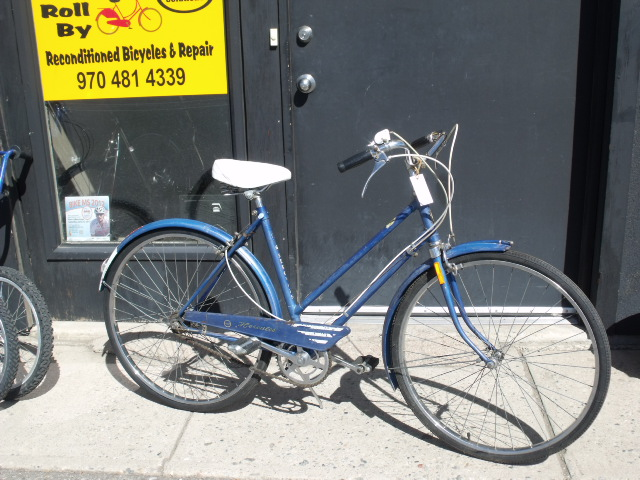
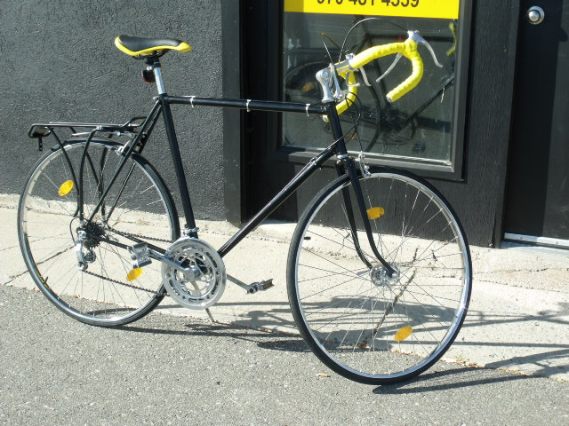
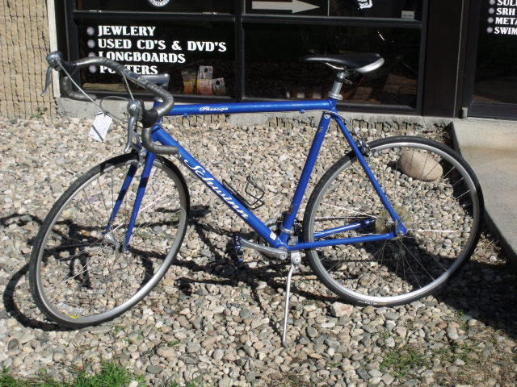
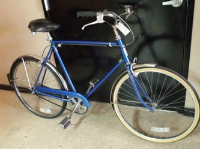

  
Step inside and you'll see a variety of bicycles ranging from modern bikes to those dating back to 1950's. Bicycles range from complete
restored collectors bicycles to reconditioned daily commuters. We have both adult and child bicycles in a variety of colors, styles, and prices
to fit (almost!) everyone.
Inventory is always changing so be sure to let us know if you're in the market for something specific, and we'll keep our eyes out.
Days Roll By not only sells bikes and bike accessories, but we repair them too! Tune-ups start at $65 and include adjustment of gears,
brakes, minor wheel truing, lube, and safety check. Turn around is quick to get you back on the road, where you belong!
Donations are always welcome and trade-ins are considered. Days Roll By recycles bicycles and related parts either through bicycle
builds - or in the case of worn parts - gives them to local artists and metalsmiths for new creations!

Days Roll By
1528 N Lincoln Ave
Loveland, CO 80538
970-481-4339
Customer Service
Links:
Facebook Page for Days Roll By